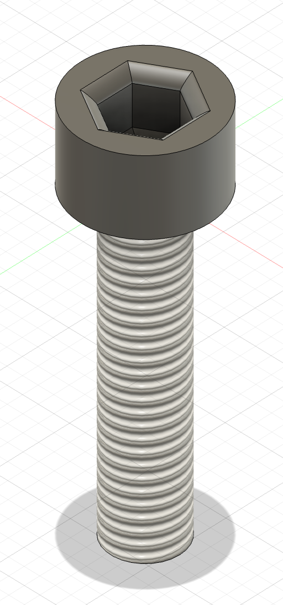

<div class="textcontainer">
<p class="margin"> </p>
<h3 align="center"><b>Week 2 >> 2D Design & Cutting</b></h3>
<p class="margin"></p>
<h4>Assignment 1: Make a Box</h4>
After following the tutorial posted on the class website, I produced the following sketch in Fusion:
<p></p>
Although I used the same number of fingers for each edge, I changed the parameters to make the box much bigger, ultimately resulting in a 120mm x 150mm x 450mm
box. The original dimensions were larger, but I had to shrink them to fit the constraints of the laser cutter.
<p></p>
Since the default box had no handles, I also decided to add some negative handles (holes in the side of the box) so that I could easily pick it up and move it
when desired. To make these handles more ergonomic, I sized them to fit my hand comfortably and added a slight bend in the top portion of the handle.
<p class="margin"></p>
<h4>Assignment 2: Fusion 360 Tutorial</h4>
<p></p>
I was curious about the mesh feature in Fusion, so I decided to learn about it via a
<a href="https://www.autodesk.com/learn/ondemand/curated/mesh-modeling-with-fusion-360/ZFiTq51jTtWutHd8LYhVM">series of video tutorials</a> on the
Autodesk website. In honor of Valentine's Day coming up this Friday, I picked a design from <a href="https://www.thingiverse.com">Thingiverse</a>,
a website where people can download free CAD models for free. The one I picked was a Valentine's Day box, shaped in a heart. Luckily for me, I
don't have a Valentine to give the box to, so I can have it all to myself!
<p class="margin"></p>
<h4>Assignment 3: Fusion Modeling</h4>
<p></p>
For the first object, I chose to model one of the gears that we used to make kinetic sculptures in class. This was much more simple than I thought,
as I discovered that Fusion has a tool to make gears with, under Utilites > Add-Ins. In this setting, I was able to specify parameters like pressure angle,
number of teeth, gear thickness, and hole diameter. After creating the basic gear, I added a few hexagonal holes and extruded the threaded locknuts inside.
The thread function in Fusion was also very straightforward and really convenient!
<p></p>
<img src="./small_gear_photo.png" alt="m5x20" style="width:100%; max-width:400px; display:block; margin:auto;" align="right", border="3px">
<p class="margin"></p>
Next, I searched through the screw cabinet for a screw and settled on the m5x20. First, I made the head of the screw, which proved to be more difficult
than anticipated. The reason being, the inside of the head had a base that sloped downwards from the sides of the inside (does that make any sense?).
In other words, the very base of the hole was internally slanted. To make this, I used the Loft tool (new favorite Fusion tool) and discovered from a
nice youtube video that the Loft tool is also capable of making non-linear extrusions, which can make some really funky shapes. Anyways, back to the
screw...after filleting the top of the head, I moved on to the threaded part of the screw, which was pretty simple to make.
<p></p>
<div class="flexrow">
<img src="./m5x20_photo1.png" alt="m5x20" style="width:20%;" border="1px">
<img src="./m5x20_photo2.png" alt="m5x20" style="width:20%;" border="1px">
</div>
<p class="margin"></p>
<div class="flexrow">

<img src="./m5x20_screw_cad_cut.png" alt="m5x20" style="width:20%;" border="1px">
</div>
</div>